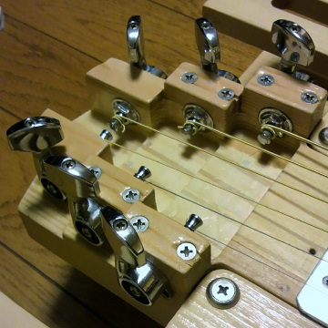

静音ギターの製作その3
2015年05月03日 カテゴリー：ギター関係
以前作った静音ギターですが、またも大幅に作り直しました。トリマーのおかげで木工の幅がかなり広がり、複雑なものを作れるようになったためです。
前回紹介したHEADWAY HC-501と同じ形・厚さにしています。完全に小型化はあきらめました。
ウイングパーツは下写真のような感じです。筋状の穴は一応軽量化のつもりです。
以前のヘッドではネジ穴部分から木が裂けてきていました。アコギ弦の張力に耐えるためには、構造にかなり気をつけないといけないようです。下写真では見えていませんが、キャップボルトはヘッドの裏まで貫通していて、ナットで固定されています。

ペグが付いている部分はムダに複雑な形にしてみました。やはり張力に耐えるためネジは必要です。また、サウンドホールにあたる部分を少し掘り込んでいます。ネックは20フレット仕様に変更し短くしました。
うまくHEADWAY HC-501の互換という感じに仕上がったと思います。唯一重いというのが難点ですね。